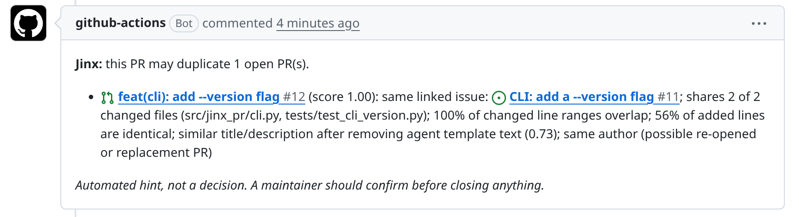

Free GitHub Action · runs on CPU · no API key
Coding agents open a lot of PRs, and some of them redo work that is already waiting for review. Jinx checks every new PR against the open ones and leaves one short comment when it finds a likely duplicate, with the reasons in plain words.

We looked at real cases from the public AIDev dataset where one agent PR repeated another PR from a different author.
Four simple checks, combined into one score from 0 to 1. Above 0.5, Jinx comments.
Agent PRs all start with "## Summary … ## Testing …". Jinx strips that, so unrelated PRs stop looking alike.
Same files changed? Same lines touched? Identical added lines?
Do both PRs fix the same issue, or does the new PR mention the old one?
Every warning lists its reasons, so a maintainer can decide in seconds. Jinx never closes or blocks a PR.
Each method was replayed on real duplicate PR pairs, against the PRs that were open at the time. Higher is better on the left, lower is better on the right.
| Method | Finds the right PR first out of 100 duplicates | False alarms per 100 PRs with no duplicate |
|---|
Jinx warns on of every 100 clean PRs. The best existing bot we tested, contrib-guard, warns on .
Jinx lists code-level reasons: shared files, overlapping lines, identical added lines. A link rule or a text-only bot can only say that two PRs look related.
On ranking, the strong methods are statistically tied, and a simple link rule is slightly ahead overall. Jinx's edge is fewer false alarms than the existing bots, clear reasons, and a ready-to-use Action.
Every detector trades missed duplicates against false alarms. Drag the slider to choose how many false alarms per 100 clean PRs you can live with, and see how many real duplicates each method would catch.
"Caught" means the method ranked the right PR first and its score was high enough to warn. Numbers come from cross-validated replays on AIDev.
Add this file to your repository. Jinx comments on new PRs and updates its comment when the PR changes.
# .github/workflows/jinx.yml
name: jinx
on:
pull_request_target:
types: [opened, reopened, synchronize, edited]
permissions:
contents: read
pull-requests: write
issues: write
jobs:
check:
runs-on: ubuntu-latest
steps:
- uses: ABCR-Labs/Jinx@mainSafe for PRs from forks: Jinx reads PR data through the GitHub API and never runs the PR's code.
Check one PR against a list of open PRs on your own machine.
pip install git+https://github.com/ABCR-Labs/Jinx jinx check new_pr.json --open-queue open_prs.jsonl